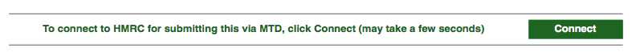
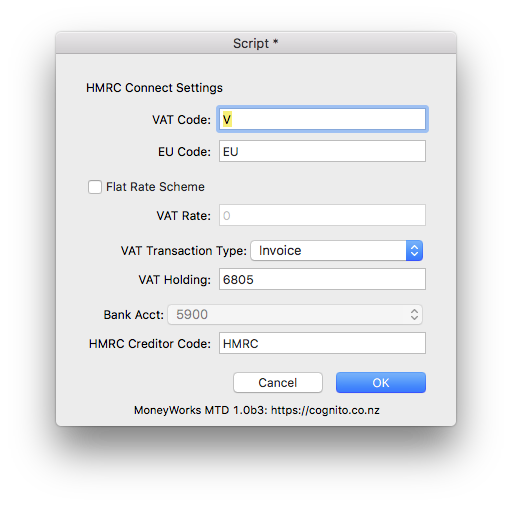

MoneyWorks Manual
Using MTD in MoneyWorks
To start the MTD process, choose Command>MTD Connect... to open the HMRC Connect window. This may take a few seconds, as MoneyWorks will check the HMRC system and display your VAT Obligations when the window opens.
Note: The MTD Connect... command is only available to users who have the VAT Report/Finalisation User Privilege turned on.
Note: You can also connect to HMRC by clicking the Connect button in the Preview of the VAT Guide:

If this is the first time you have used the MTD Connect command, you will prompted to enter some required settings:

The following information is required:
VAT Code: This is the first character of your VAT codes, normally "V". The report picks up all transactions with a tax code starting with this code (so you can have, for example, a code VR for reduced VAT).
EU Code: This is the code (normally "EU") you use for VAT on purchases from other EU countries. All transactions with codes starting with this will be included in the EU VAT calculations.
Flat Rate Scheme: Turn this on only if you are on the Flat Rate Scheme and enter your VAT rate into the VAT Rate field.
VAT Transaction Type: The type of MoneyWorks transaction to make to represent the return to HMRC. You can choose None for no transaction, Payment for a Payment transaction, and Invoice for a purchase invoice (which you will pay later).
VAT Holding: This is your VAT Holding account. It should be the same as that used in the VAT Finalisation section of the VAT Report. You need to specify this if you choose Payment or Invoice for the VAT Transaction Type.
Bank Acct: If you make a Payment transaction, specify the bank account from which you are going to make the VAT payment.
HMRC Code: The creditor code for HMRC if you elect to make a Purchase Invoice. You will need to set up HMRC as a creditor in MoneyWorks. When you submit a return using MTD, a creditor invoice will be created which you can mark off as being paid once you have actually paid your VAT (or received a refund).
If you need to alter your settings subsequently, click the Settings button in the HMRC Connect window.
Notes on Flat Rate Scheme
Certain capital expenditure transactions need to be reported in this scheme. To include such transactions (for example the Capital expenditure above £2000) put the code "FRI" (Flate Rate Include) in the category2 field of the Account record. These transactions are reported only, not included in calculation of flat rate VAT payable. To exclude capital expenditure transactions from the report, use an account code with "FRE" (Flat Rate Exclude) in the account's category2 field. Capital expenditures of less than £2000 for example do not need to be reported.
Example: If you buy a vehicle for £1500 then this should be coded to a GL account which has the code "FRE" in category2 field, so as to exclude it from the report. Alternatively, if the vehicle was bought for say £2500, then it should be coded to a GL account with the code "FRI" in category2, as this is above the limit.
Hence the implementation of flat VAT may require you to have two different account codes (for the same type of item, such as Vehicle) with the codes "FRE" and "FRI" in their category2 fields.